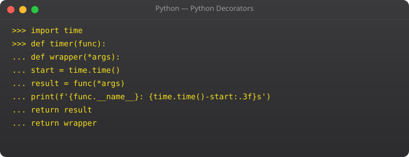

Python's module and package system is one of its greatest strengths. The standard library covers an enormous range of tasks with no extra installation. The PyPI ecosystem adds hundreds of thousands more packages. Understanding how to organise your own code into modules and how to use pip effectively is essential professional Python knowledge.
# utils.py
def calculate_tax(amount, rate=0.18):
return amount * rate
SUPPORTED_CURRENCIES = ["INR", "USD", "EUR"]
# main.py
import utils
tax = utils.calculate_tax(1000) # 180.0
from utils import calculate_tax
tax = calculate_tax(1000, rate=0.28) # 280.0
import utils as u
print(u.SUPPORTED_CURRENCIES)myapp/
__init__.py # Marks directory as package
models/
__init__.py
user.py
product.py
services/
__init__.py
payment.py
utils/
validators.py
main.pyfrom myapp.models.user import User
from myapp.services.payment import process_payment
from myapp.utils import validatorsimport os, sys, json, re, datetime
from pathlib import Path
from collections import Counter, defaultdict
import logging
# os
os.makedirs("logs", exist_ok=True)
files = os.listdir(".")
env_var = os.environ.get("HOME", "/tmp")
# datetime
now = datetime.datetime.now()
formatted = now.strftime("%Y-%m-%d %H:%M")
tomorrow = now + datetime.timedelta(days=1)
# re (regular expressions)
pattern = r"^[\w.-]+@[\w.-]+\.\w+$"
print(bool(re.match(pattern, "suraj@example.com"))) # True# Create virtual environment
python3 -m venv venv
source venv/bin/activate # Linux/macOS
.\venv\Scripts\activate # Windows
# Install packages in venv
pip install requests flask pandas pytest
# Save dependencies
pip freeze > requirements.txt
# Install from file
pip install -r requirements.txt
# Useful commands
pip list # List installed
pip show requests # Info about package
pip install --upgrade pip # Update pip itselfA module is a single .py file. A package is a directory with __init__.py containing multiple modules. Both are imported the same way.
Python searches: sys.modules cache, built-in modules, then sys.path directories. sys.path includes current directory and site-packages where pip installs.
pip install package-name. Specific version: pip install requests==2.28. From file: pip install -r requirements.txt. Always use a virtual environment.
Modules included with every Python installation -- no pip needed. Covers os, sys, json, csv, datetime, re, pathlib, logging, threading, http, unittest, and hundreds more.
Each project gets its own isolated Python and packages. Prevents version conflicts between projects. Without venvs, all projects share one global Python and conflicts are inevitable.
In Part 11, we cover Object-Oriented Programming -- classes, inheritance, and the OOP patterns used in major Python frameworks.
← Back to Blog# Install pyenv (manages multiple Python versions)
curl https://pyenv.run | bash
# Install Python versions
pyenv install 3.11.8
pyenv install 3.12.2
# Set default globally
pyenv global 3.11.8
# Set per project
cd myproject
pyenv local 3.12.2 # Creates .python-version file
# Create virtual environment with specific version
pyenv local 3.12.2
python -m venv venv
source venv/bin/activatepip install poetry
# Create new project
poetry new myproject
cd myproject
# Add dependencies
poetry add flask requests boto3
poetry add --group dev pytest black mypy
# pyproject.toml manages everything
[tool.poetry.dependencies]
python = "^3.11"
flask = "^3.0"
requests = "^2.31"
# Install all dependencies
poetry install
# Run commands in virtual env
poetry run python app.py
poetry run pytest
# Export to requirements.txt for compatibility
poetry export -f requirements.txt --output requirements.txtmyapp/
__init__.py # Keep minimal: just expose public API
config.py # Configuration constants
models/
__init__.py # from .user import User (re-export)
user.py
order.py
services/
__init__.py
email_service.py
payment_service.py
utils/
__init__.py
validators.py
formatters.py
tests/
conftest.py # Shared pytest fixtures
test_models.py
test_services.py# models/__init__.py
from .user import User
from .order import Order, OrderStatus
from .product import Product
__all__ = ["User", "Order", "OrderStatus", "Product"]
# Now users can do:
from myapp.models import User, Order # Clean import
# Instead of:
from myapp.models.user import User # Exposes internal structureimport sys
# See where Python looks for modules
print(sys.path)
# ['', '/usr/lib/python3.11', '/usr/lib/python3.11/lib-dynload',
# '/home/suraj/.local/lib/python3.11/site-packages', ...]
# Add a directory to search path
sys.path.insert(0, '/home/suraj/mylibs')
# See all cached (already imported) modules
print(list(sys.modules.keys())[:10])
# Reload a module after changing it (useful in REPL)
import importlib
importlib.reload(mymodule)
# Conditional imports
try:
import ujson as json # Faster JSON if available
except ImportError:
import json # Fall back to stdlib
# Lazy imports for startup performance
def get_pandas():
import pandas as pd # Only imported when first called
return pd#!/usr/bin/env python3
"""
disk-check: Check disk usage and alert if above threshold.
Usage: disk-check --threshold 85 --path /
"""
import argparse
import sys
import shutil
def check_disk(path: str, threshold: int) -> int:
total, used, free = shutil.disk_usage(path)
pct = (used / total) * 100
print(f"Path: {path}")
print(f"Total: {total / 1e9:.1f} GB")
print(f"Used: {used / 1e9:.1f} GB ({pct:.1f}%)")
print(f"Free: {free / 1e9:.1f} GB")
if pct >= threshold:
print(f"ALERT: Disk usage {pct:.1f}% exceeds threshold {threshold}%")
return 1
return 0
def main():
parser = argparse.ArgumentParser(description="Check disk usage")
parser.add_argument("--path", default="/", help="Path to check")
parser.add_argument("--threshold", type=int, default=85, help="Alert %")
args = parser.parse_args()
sys.exit(check_disk(args.path, args.threshold))
if __name__ == "__main__":
main()